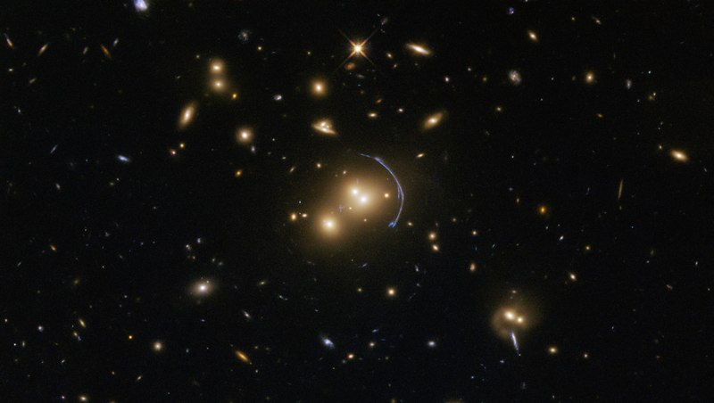
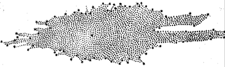
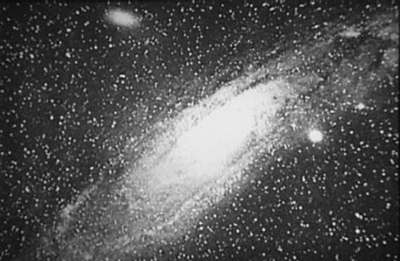

This article is about the astronomical structure. For Earth's galaxy, see Milky Way. For other uses, see Galaxy (disambiguation).
A galaxy is a system of stars, stellar remnants, interstellar gas, dust, and dark matter bound together by gravity.[1][2] The word is derived from the Greek galaxias (γαλαξίας), literally 'milky', a reference to the Milky Way galaxy that contains the Solar System. Galaxies, averaging an estimated 100 million stars,[3] range in size from dwarfs with less than a hundred million stars, to the largest galaxies known – supergiants with one hundred trillion stars, each orbiting its galaxy's center of mass. Most of the mass in a typical galaxy is in the form of dark matter, with only a few percent of that mass visible in the form of stars and nebulae. Supermassive black holes are a common feature at the centres of galaxies.
Galaxies are categorized according to their visual morphology as elliptical,[4] spiral, or irregular.[5] Many are thought to have supermassive black holes at their centers. The Milky Way's central black hole, known as Sagittarius A*, has a mass four million times greater than the Sun.[6]
It is estimated that there are between 200 billion[7] (2×1011) to 2 trillion[8] galaxies in the observable universe. Most galaxies are 1,000 to 100,000 parsecs in diameter (approximately 3,000 to 300,000 light years) and are separated by distances on the order of millions of parsecs (or megaparsecs). For comparison, the Milky Way has a diameter of at least 26,800 parsecs (87,400 ly) and is separated from the Andromeda Galaxy (with diameter of about 152,000 ly), its nearest large neighbor, by 780,000 parsecs (2.5 million ly.)
The space between galaxies is filled with a tenuous gas (the intergalactic medium) with an average density of less than one atom per cubic meter. Most galaxies are gravitationally organized into groups, clusters and superclusters. The Milky Way is part of the Local Group, which it dominates along with the Andromeda Galaxy. The group is part of the Virgo Supercluster. At the largest scale, these associations are generally arranged into sheets and filaments surrounded by immense voids.[9] Both the Local Group and the Virgo Supercluster are contained in a much larger cosmic structure named Laniakea.[10]
The word galaxy was borrowed via French and Medieval Latin from the Greek term for the Milky Way, galaxías (kúklos) γαλαξίας (κύκλος)[11][12] 'milky (circle)', named after its appearance as a milky band of light in the sky. In Greek mythology, Zeus places his son born by a mortal woman, the infant Heracles, on Hera's breast while she is asleep so the baby will drink her divine milk and thus become immortal. Hera wakes up while breastfeeding and then realizes she is nursing an unknown baby: she pushes the baby away, some of her milk spills, and it produces the band of light known as the Milky Way.[13][14]
In the astronomical literature, the capitalized word "Galaxy" is often used to refer to the Milky Way galaxy, to distinguish it from the other galaxies in the observable universe. The English term Milky Way can be traced back to a story by Chaucer c. 1380:
See yonder, lo, the Galaxyë
Which men clepeth the Milky Wey,
For hit is whyt.
— Geoffrey Chaucer, The House of Fame[12]
Galaxies were initially discovered telescopically and were known as spiral nebulae. Most 18th- to 19th-century astronomers considered them as either unresolved star clusters or anagalactic nebulae, and were just thought of as a part of the Milky Way, but their true composition and natures remained a mystery. Observations using larger telescopes of a few nearby bright galaxies, like the Andromeda Galaxy, began resolving them into huge conglomerations of stars, but based simply on the apparent faintness and sheer population of stars, the true distances of these objects placed them well beyond the Milky Way. For this reason they were popularly called island universes, but this term quickly fell into disuse, as the word universe implied the entirety of existence. Instead, they became known simply as galaxies.[15]
Tens of thousands of galaxies have been catalogued, but only a few have well-established names, such as the Andromeda Galaxy, the Magellanic Clouds, the Whirlpool Galaxy, and the Sombrero Galaxy. Astronomers work with numbers from certain catalogues, such as the Messier catalogue, the NGC (New General Catalogue), the IC (Index Catalogue), the CGCG (Catalogue of Galaxies and of Clusters of Galaxies), the MCG (Morphological Catalogue of Galaxies), the UGC (Uppsala General Catalogue of Galaxies), and the PGC (Catalogue of Principal Galaxies, also known as LEDA). All the well-known galaxies appear in one or more of these catalogs but each time under a different number.
For example, Messier 109 (or "M109") is a spiral galaxy having the number 109 in the catalog of Messier. It also has the designations NGC 3992, UGC 6937, CGCG 269–023, MCG +09-20-044, and PGC 37617 (or LEDA 37617). Millions of fainter galaxies are known by their identifiers in sky surveys such as the Sloan Digital Sky Survey, in which M109 is cataloged as SDSS J115735.97+532228.9.
The realization that we live in a galaxy that is one among many parallels major discoveries about the Milky Way and other nebulae.
Greek philosopher Democritus (450–370 BCE) proposed that the bright band on the night sky known as the Milky Way might consist of distant stars.[16] Aristotle (384–322 BCE), however, believed the Milky Way was caused by "the ignition of the fiery exhalation of some stars that were large, numerous and close together" and that the "ignition takes place in the upper part of the atmosphere, in the region of the World that is continuous with the heavenly motions."[17] Neoplatonist philosopher Olympiodorus the Younger (c. 495–570 CE) was critical of this view, arguing that if the Milky Way was sublunary (situated between Earth and the Moon) it should appear different at different times and places on Earth, and that it should have parallax, which it did not. In his view, the Milky Way was celestial.[18]
According to Mohani Mohamed, Arabian astronomer Alhazen (965–1037) made the first attempt at observing and measuring the Milky Way's parallax,[19] and he thus "determined that because the Milky Way had no parallax, it must be remote from the Earth, not belonging to the atmosphere."[20] Persian astronomer al-Bīrūnī (973–1048) proposed the Milky Way galaxy was "a collection of countless fragments of the nature of nebulous stars."[21] Andalusian astronomer Ibn Bâjjah ("Avempace", d. 1138) proposed that it was composed of many stars that almost touched one another, and appeared to be a continuous image due to the effect of refraction from sublunary material,[17][22] citing his observation of the conjunction of Jupiter and Mars as evidence of this occurring when two objects were near.[17] In the 14th century, Syrian-born Ibn Qayyim proposed the Milky Way galaxy was "a myriad of tiny stars packed together in the sphere of the fixed stars."[23]
Actual proof of the Milky Way consisting of many stars came in 1610 when the Italian astronomer Galileo Galilei used a telescope to study it and discovered it was composed of a huge number of faint stars.[24][25]
In 1750, English astronomer Thomas Wright, in his An Original Theory or New Hypothesis of the Universe, correctly speculated that it might be a rotating body of a huge number of stars held together by gravitational forces, akin to the Solar System but on a much larger scale, and that the resulting disk of stars could be seen as a band on the sky from a perspective inside it.[26][27] In his 1755 treatise, Immanuel Kant elaborated on Wright's idea about the Milky Way's structure.[28]
The first project to describe the shape of the Milky Way and the position of the Sun was undertaken by William Herschel in 1785 by counting the number of stars in different regions of the sky. He produced a diagram of the shape of the galaxy with the Solar System close to the center.[29][30] Using a refined approach, Kapteyn in 1920 arrived at the picture of a small (diameter about 15 kiloparsecs) ellipsoid galaxy with the Sun close to the center. A different method by Harlow Shapley based on the cataloguing of globular clusters led to a radically different picture: a flat disk with diameter approximately 70 kiloparsecs and the Sun far from the center.[27] Both analyses failed to take into account the absorption of light by interstellar dust present in the galactic plane; but after Robert Julius Trumpler quantified this effect in 1930 by studying open clusters, the present picture of the Milky Way galaxy emerged.[31]
The first project to describe the shape of the Milky Way and the position of the Sun was undertaken by William Herschel in 1785 by counting the number of stars in different regions of the sky. He produced a diagram of the shape of the galaxy with the Solar System close to the center.[29][30] Using a refined approach, Kapteyn in 1920 arrived at the picture of a small (diameter about 15 kiloparsecs) ellipsoid galaxy with the Sun close to the center. A different method by Harlow Shapley based on the cataloguing of globular clusters led to a radically different picture: a flat disk with diameter approximately 70 kiloparsecs and the Sun far from the center.[27] Both analyses failed to take into account the absorption of light by interstellar dust present in the galactic plane; but after Robert Julius Trumpler quantified this effect in 1930 by studying open clusters, the present picture of the Milky Way galaxy emerged.[31]
A few galaxies outside the Milky Way are visible on a dark night to the unaided eye, including the Andromeda Galaxy, Large Magellanic Cloud, Small Magellanic Cloud, and the Triangulum Galaxy. In the 10th century, Persian astronomer Al-Sufi made the earliest recorded identification of the Andromeda Galaxy, describing it as a "small cloud".[32] In 964, he probably mentioned the Large Magellanic Cloud in his Book of Fixed Stars (referring to "Al Bakr of the southern Arabs",[33] since at a declination of about 70° south it was not visible where he lived); it was not well known to Europeans until Magellan's voyage in the 16th century.[34][33] The Andromeda Galaxy was later independently noted by Simon Marius in 1612.[32] In 1734, philosopher Emanuel Swedenborg in his Principia speculated that there might be other galaxies outside that were formed into galactic clusters that were minuscule parts of the universe that extended far beyond what could be seen. These views "are remarkably close to the present-day views of the cosmos."[35] In 1745, Pierre Louis Maupertuis conjectured that some nebula-like objects were collections of stars with unique properties, including a glow exceeding the light its stars produced on their own, and repeated Johannes Hevelius's view that the bright spots were massive and flattened due to their rotation.[36] In 1750, Thomas Wright correctly speculated that the Milky Way was a flattened disk of stars, and that some of the nebulae visible in the night sky might be separate Milky Ways.[27][37]
Toward the end of the 18th century, Charles Messier compiled a catalog containing the 109 brightest celestial objects having nebulous appearance. Subsequently, William Herschel assembled a catalog of 5,000 nebulae.[27] In 1845, Lord Rosse constructed a new telescope and was able to distinguish between elliptical and spiral nebulae. He also managed to make out individual point sources in some of these nebulae, lending credence to Kant's earlier conjecture.[38]
In 1912, Vesto Slipher made spectrographic studies of the brightest spiral nebulae to determine their composition. Slipher discovered that the spiral nebulae have high Doppler shifts, indicating that they are moving at a rate exceeding the velocity of the stars he had measured. He found that the majority of these nebulae are moving away from us.[39][40]
In 1917, Heber Curtis observed nova S Andromedae within the "Great Andromeda Nebula" (as the Andromeda Galaxy, Messier object M31, was then known). Searching the photographic record, he found 11 more novae. Curtis noticed that these novae were, on average, 10 magnitudes fainter than those that occurred within this galaxy. As a result, he was able to come up with a distance estimate of 150,000 parsecs. He became a proponent of the so-called "island universes" hypothesis, which holds that spiral nebulae are actually independent galaxies.[41]
In 1920 a debate took place between Harlow Shapley and Heber Curtis (the Great Debate), concerning the nature of the Milky Way, spiral nebulae, and the dimensions of the universe. To support his claim that the Great Andromeda Nebula is an external galaxy, Curtis noted the appearance of dark lanes resembling the dust clouds in the Milky Way, as well as the significant Doppler shift.[42]
In 1922, the Estonian astronomer Ernst Öpik gave a distance determination that supported the theory that the Andromeda Nebula is indeed a distant extra-galactic object.[43] Using the new 100-inch Mt. Wilson telescope, Edwin Hubble was able to resolve the outer parts of some spiral nebulae as collections of individual stars and identified some Cepheid variables, thus allowing him to estimate the distance to the nebulae: they were far too distant to be part of the Milky Way.[44] In 1936 Hubble produced a classification of galactic morphology that is used to this day.[45]